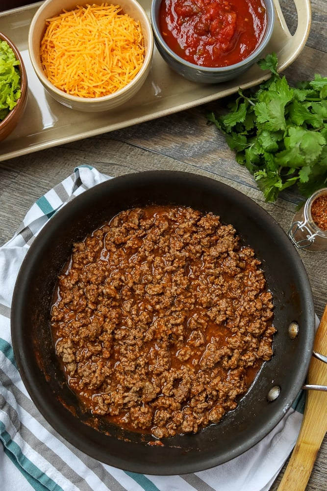

Taco Meat

Description
The absolute BEST Taco Meat! Made with a homemade blend of taco seasonings and
tomato sauce, this makes the most flavorful and juiciest taco meat EVER! This
easy recipe comes together in just 15 minutes and is the perfect base for Tacos.
Ingredients
- Ground beef
- Tomato sauce
- Taco seasonings
Steps
- Heat a large non-stick or cast iron skillet over medium high heat. If using a stainless steel skillet, add in ½ tablespoon oil to prevent meat from sticking.
- Add in ground meat and begin to break up in small chunks as the meat browns, stirring frequently to evenly brown the meat.
- Once the meat is browned, drain off excess grease, if you have any. You can even blot with a paper towel to absorb more grease, if desired.
- Return drained meat to skillet and add in tomato sauce, ¼ cup water, and the seasonings.
- Simmer over medium heat until liquid from tomatoes has been absorbed, about 5-7 minutes.